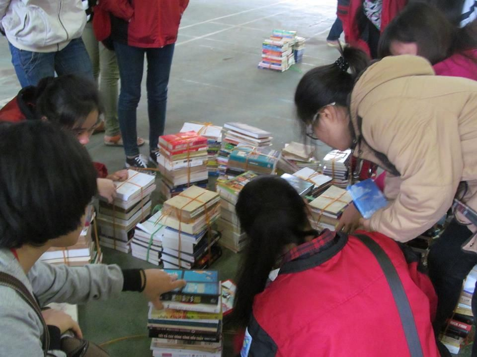

01 / Sách và đồ dùng học tập
Gửi sách vở, trao thêm niềm vui đến lớp
Những cuốn sách còn tốt, những bộ đồ dùng học tập còn mới hay những món quà nhỏ có thể tiếp tục hành trình đến với các em. Chương trình tiếp nhận và kết nối các vật phẩm phù hợp với nhu cầu đã được xác minh.
Chuyện Trên Non đã trao tặng hơn 2.000 cuốn sách đến các em nhỏ vùng cao, góp thêm những trang tri thức vào hành trình học tập nơi miền non xa. Mỗi cuốn sách được trao đi không chỉ mang theo con chữ, mà còn mở ra những chân trời mới, nuôi dưỡng trí tò mò và chắp cánh cho những ước mơ của các em.
Với Chuyện Trên Non, hành trình ấy vẫn mong được nối dài bằng những tấm lòng sẻ chia. Những cuốn sách còn tốt, phù hợp với lứa tuổi và nhu cầu học tập của các em có thể tiếp tục được trao gửi, để tri thức không dừng lại trên một trang sách cũ mà được viết tiếp bằng những niềm vui mới.
Nếu bạn mong muốn đồng hành cùng chương trình, vui lòng điền thông tin vào form đăng ký bên dưới. Chuyện Trên Non sẽ liên hệ để xác nhận, trao đổi về sách vở và hướng dẫn cách thức tiếp nhận, gửi tặng phù hợp. Mỗi cuốn sách bạn trao đi sẽ góp thêm một nhịp cầu đưa yêu thương đến lớp.